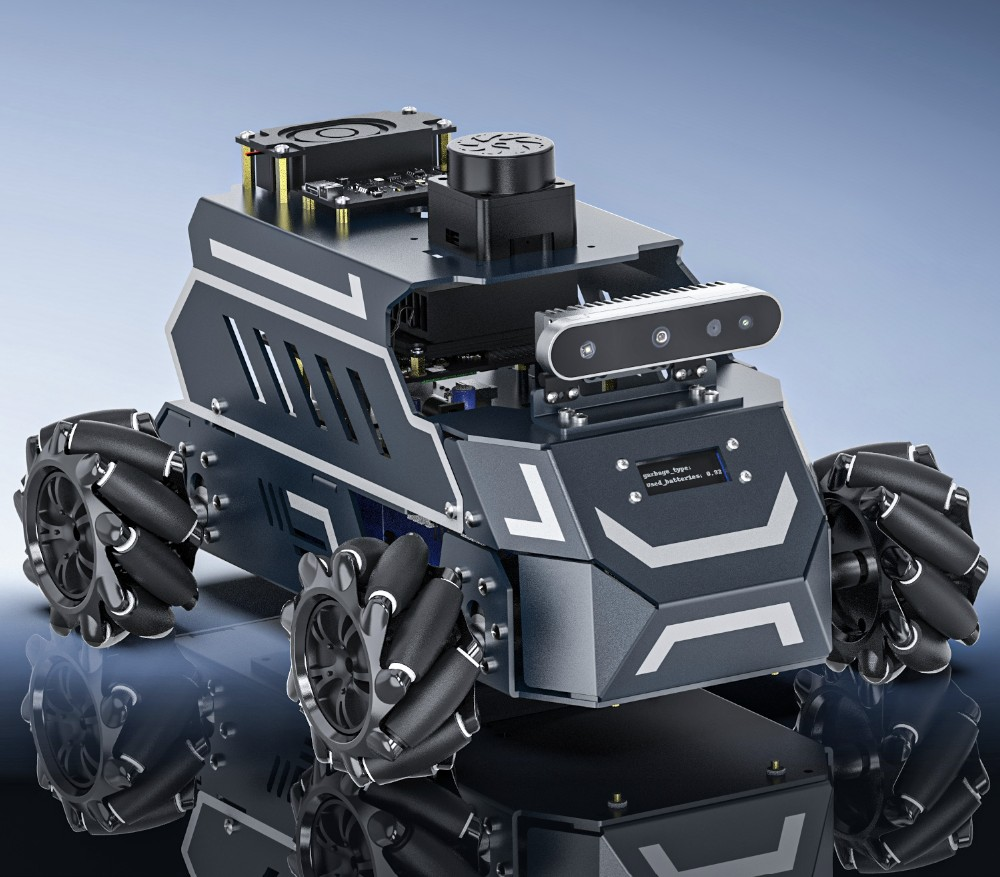

LAB-01 · 系統規格Platform Spec Sheet
● In Development- Compute
- NVIDIA Jetson Orin Nano — ROS2 nodes, planning & navigation
- Vision
- YOLO object detection · Gemini vision-language — perception on the Jetson
- Input
- 2D Lidar · camera · gamepad / joystick teleop — commands enter as ROS2 topics
- MCU
- STM32F103RCT6 on a Yahboom ROS driver board — 72 MHz · FreeRTOS · real-time motor control
- Actuation
- Four brushed DC motors · mecanum drive, each with a quadrature encoder
- Feedback
- Wheel encoders → closed-loop speed control & odometry; on-board battery-voltage sensing
- Stack
- ROS2 · Gazebo · STM32CubeMX · Keil MDK
- Repo
- github.com/HsunWeiTu/wes_car — ROS2 workspace, protocol & vision